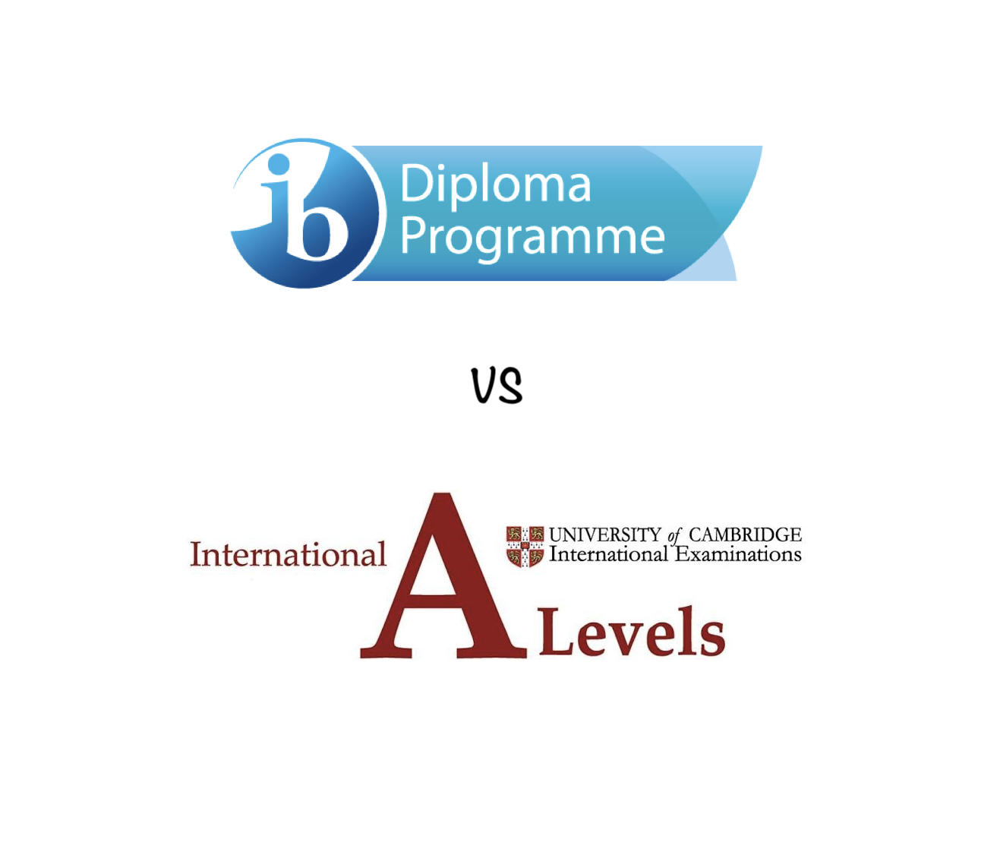

06-16-2021 ~ Girvin Djapardi
IBDP Or A-Level?

Before I start writing about the two, I want to clear up a misconception real quick. A lot of students are surprised that if they apply to a university in the US (which is not surprising as they dominate nearly 60% of the Top 100 University Worldwide), they are told to take the SAT/ACT.
SAT or the ACT are exams to show to universities that you have garnered a solid understanding of high school topics. IBDP or A-levels, on the other, are just like AP. They serve as way to potentially gain college credits. (You should do a bit of research about this as it is important to understand it). Being able to nail both the SAT/ACT and a curriculum that offers extra credits is key to being admitted to a good university(other factors also matter greatly but that is beyond this post).
With that aside, IBDP or A-level?
Before the discussion, we must take a quick look at both.
IBDP
1) You take 6 subjects. 3 at Higher Level and 3 at Standard Level. It is a requirement to take 2 languages at any level. For each subject, you are required to finish an IA.
2) Finish a 4000 word essay on a topic of your choice.
3) Complete your TOK Exhibition and Essay.
4) Have at least one CAS Project.
5) Each subject is scored out of 7 and your TOK and Extended Essay is worth 1.5 each.
6) Take note that the TOK, EE and CAS are core components, meaning if you fail any of them, you failed your Diploma.
*There is a lot of jargon above like CAS and TOK. Further research would help with your understanding.
A-level
1) You usually take 3-4 subjects. No requirement to take language as a subject.
2) Subjects usually delve deeper and are more intensive than IB HL subjects.
3) Subjects are graded based on a Alphabet system, A* being the highest grade you can achieve.
4) Generally more favored if you are applying to Universities in the UK.
Now, the discussion gets real.
The main distinction between the IB and the A-level is that in the IB, you have to do a lot more.
What do I mean by that?
I am not saying that you study more in the IB. However, in the IB, you are required to take at least 6 subjects. Furthermore, there are 3 components that you will never have to deal with if you take A-levels, namely CAS, TOK and EE.
Being an IB student, it is inherently evident that I spend more time doing things related to my curriculum compared to my friends who take A-levels. This, I believe, is the main distinction.
When people ask me whether to go for one or the other, I always give a rather 'messy' answer. I think this is because I jump from one pro to one con to another con to another pro, if that makes sense. However, I do hope that at least you get a thing or two from my 'reply.'
I think it really comes down to you, as an individual. If you feel like you are well-versed in multiple subjects, taking 6 subjects is really not that big of a deal(remember you take 3 in Standard Level and that, content-wise, A-levels delve deeper, although there has been no real objective evidence for this argument).
In the IB, you develop skills I believe that are really important when you go to University. The most important one is research. A lot of people drop out of University because it is different.
'I did not expect this.'
When you pursue higher education, you realize how important research skills are and the IB prepares you very well, evident from the mandatory 4000-word paper you have to submit. Furthermore, TOK is a course that really gets you thinking. Like, really. It is much better to watch a video or two about it to know what it really gets you to do. If you are interested, then you are likely to do well in it.
However, if these types of courses do not interest you all that much, all I can say is that love it or hate it, it develops you ability to critically think which is really sought after in this Information Age we are currently living in.
This may or may not be an exaggeration but if you take the A-levels, you would have way more 'free-time.' Now, in this post, I am assuming that you are determined to get into a good University.
With all that free-time, it is obvious you can use this time to further enhance skills you know are going to be important in your own future.
Do you now see why it is really up to the individual?
IB gets you to do all these important and helpful things as 'it is mandatory' but do take note that all these things can also be done outside of the IB. Being able to critically think is definitely not only restricted to the IB and more so are research skills. These are skills you can develop in workshops or courses.
Another point you need to consider is language proficiency. If you are only fluent in 1 language and have no knowledge whatsoever in another, it will be challenging for you to take the IB. As mentioned, you have to take 2 languages and they are all worth 7 marks. I believe that A-levels are meant for people who are really specialized in a few subjects and want to delve deep as possible in terms of content for these few subjects. Examples may be people who want to be a surgeon and are really good in subjects that you need to be a surgeon. If this is you, A-level is the way to go.
If you have read up to here, congrats! I really want to be able to sum it up in a succinct manner so wish me luck!
In conclusion, both curriculums are acknowledged worldwide. Both have sent millions of students to top Universities. To say one is better than the other may be a bad idea. It really comes down to you as an individual. What do you enjoy? What do you believe are skills you need for your future? If you have spare time, do you have the dedication to do the 'right things.' You have to take all things into consideration.
As a final say, I will be a bit biased. I believe IB prepares you better as an individual. It takes into account the fact that when you graduate from University, you will not be tested about the catalyst in the Haber process. Life gets so much more practical than that. The A-levels, I believe, comes up short in this aspect. However, it comes back to my point earlier.
It all depends on you as an individual.
An IB student can do the bare minimum. They can look at TOK as a joke and fail to recognize the merits of CAS and EE. An A-level student can be smart in allocating their time, joining workshops and signing up for sources at things he/she believes are not taught in class but are important nevertheless.
If this is the discussion we are having, its not which curriculum is better. It is what you are capable of striving towards as a student.